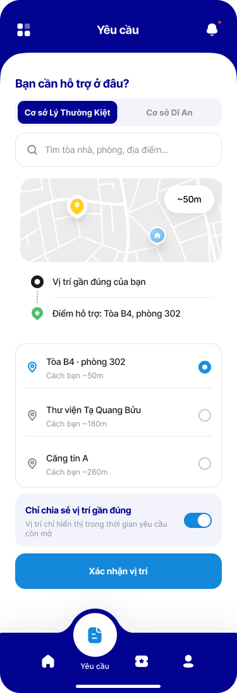
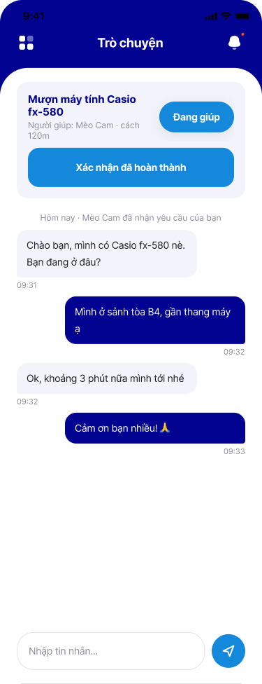

⌁
Khi bạn cần giúp đỡ
Tạo yêu cầu, mô tả nhu cầu và chia sẻ địa điểm để những người ở gần có thể tiếp cận.
Một nhấp là xong, kết nối ngay người gần nhất, giúp đỡ nhanh chóng khi cần.

THE PROBLEM & THE IDEA
Trong khuôn viên trường, sinh viên đôi khi cần hỗ trợ cho những tình huống bất ngờ như mượn dụng cụ học tập, tìm đường hoặc giải quyết một vấn đề phát sinh. Tuy nhiên, việc tìm người giúp đỡ thường phải thông qua các hội nhóm hoặc liên hệ thủ công, khiến quá trình này mất thời gian và khó tiếp cận người ở gần.
FlashHelper được xây dựng như một nền tảng kết nối sinh viên có nhu cầu hỗ trợ với những sinh viên ở khu vực lân cận, tận dụng GPS và dữ liệu vị trí để việc giúp đỡ trở nên thuận tiện hơn.
Tạo yêu cầu, mô tả nhu cầu và chia sẻ địa điểm để những người ở gần có thể tiếp cận.
Khám phá những yêu cầu trong khu vực lân cận và chủ động hỗ trợ sinh viên khác.
Trao đổi, theo dõi quá trình hỗ trợ và ghi nhận những đóng góp cho cộng đồng sinh viên.
WHY FLASHHELPER
Thay vì tìm kiếm sự giúp đỡ một cách thủ công, FlashHelper tận dụng thông tin vị trí để đưa các yêu cầu hỗ trợ đến gần hơn với cộng đồng sinh viên xung quanh. Chỉ với một vài thao tác, người cần giúp đỡ có thể chia sẻ nhu cầu và kết nối với những người có khả năng hỗ trợ.
WHAT YOU CAN DO
Từ lúc tạo yêu cầu đến khi hoàn thành hỗ trợ, FlashHelper mang đến các thao tác rõ ràng và dễ theo dõi.
Mô tả nhu cầu, chọn địa điểm và gửi yêu cầu chỉ với một vài thao tác.
01Khám phá những yêu cầu hỗ trợ được chia sẻ trong khu vực lân cận.
02Trao đổi trực tiếp, nhận thông báo và theo dõi trạng thái của yêu cầu.
03Ghi nhận những đóng góp thông qua hệ thống điểm thưởng của FlashHelper.
04HOW IT WORKS
FlashHelper kết nối hai vai trò trong cùng một cộng đồng: người cần hỗ trợ và người sẵn sàng giúp đỡ.


APP PREVIEW
Khám phá một số màn hình tiêu biểu trong bản thiết kế UI/UX của FlashHelper.



EXPLORE FLASHHELPER
Tìm hiểu thêm về ý tưởng, quá trình thiết kế và trải nghiệm prototype của FlashHelper.
FlashHelper is currently under development. Explore the UI/UX design and interactive prototype.